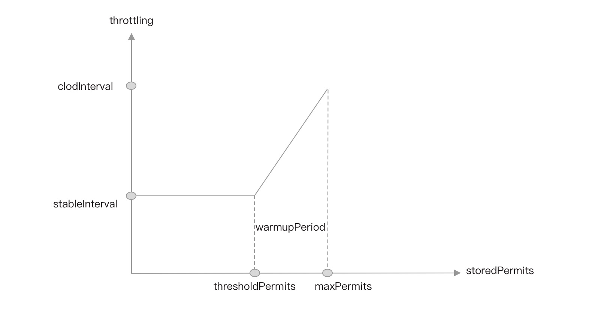

- 01 开篇词：一次服务雪崩问题排查经历.md.html
- 02 为什么需要服务降级以及常见的几种降级方式.md.html
- 03 为什么选择 Sentinel，Sentinel 与 Hystrix 的对比.md.html
- 04 Sentinel 基于滑动窗口的实时指标数据统计.md.html
- 05 Sentinel 的一些概念与核心类介绍.md.html
- 06 Sentinel 中的责任链模式与 Sentinel 的整体工作流程.md.html
- 07 Java SPI 及 SPI 在 Sentinel 中的应用.md.html
- 08 资源指标数据统计的实现全解析（上）.md.html
- 09 资源指标数据统计的实现全解析（下）.md.html
- 10 限流降级与流量效果控制器（上）.md.html
- 11 限流降级与流量效果控制器（中）.md.html
- 12 限流降级与流量效果控制器（下）.md.html
- 13 熔断降级与系统自适应限流.md.html
- 14 黑白名单限流与热点参数限流.md.html
- 15 自定义 ProcessorSlot 实现开关降级.md.html
- 16 Sentinel 动态数据源：规则动态配置.md.html
- 17 Sentinel 主流框架适配.md.html
- 18 Sentinel 集群限流的实现（上）.md.html
- 19 Sentinel 集群限流的实现（下）.md.html
- 20 结束语：Sentinel 对应用的性能影响如何？.md.html
- 21 番外篇：Sentinel 1.8.0 熔断降级新特性解读.md.html
- 捐赠
12 限流降级与流量效果控制器（下）
WarmUpController
Warm Up，冷启动。在应用升级重启时，应用自身需要一个预热的过程，预热之后才能到达一个稳定的性能状态，比如说，接口预热阶段完成 JIT 即时编译、完成一些单例对象的创建、线程池的创建、各种连接池的初始化、或者执行首次需要加锁执行的代码块。
冷启动并非只在应用重启时需要，在一段时间没有访问的情况下，连接池存在大量过期连接需要待下次使用才移除掉并创建新的连接、一些热点数据缓存过期需要重新查数据库写入缓存等，这些场景下也需要冷启动。
WarmUpController 支持设置冷启动周期（冷启动时长），默认为 10 秒，WarmUpController 在这 10 秒内会控制流量平缓的增长到限量阈值。例如，对某个接口限制 QPS 为 200，10 秒预热时间，那么这 10 秒内，相当于每秒的限流阈值分别为：5qps、15qps、35qps、70qps、90qps、115qps、145qps、170qps、190qps、200qps，当然，这组数据只是假设。
如果要使用 WarmUpController，则限量规则阈值类型必须配置为 GRADE_QPS，例如：
FlowRule flowRule = new FlowRule();
// 限流 QPS 阈值
flowRule.setCount(200);
// 流量控制效果配置为使用冷启动控制器
flowRule.setControlBehavior(RuleConstant.CONTROL_BEHAVIOR_WARM_UP);
// 冷启动周期，单位秒
flowRule.setWarmUpPeriodSec(10);
flowRule.setResource("GET:/hello");
FlowRuleManager.loadRules(Collections.singletonList(flowRule));
Sentinel 冷启动限流算法参考了 Guava 的 SmoothRateLimiter 实现的冷启动限流算法，但实现上有很大的区别，Sentinel 主要用于控制每秒的 QPS，不会控制每个请求的间隔时间，只要满足每秒通过的 QPS 即可。正因为与 Guava 的不同，官方文档目前也没有很详细的介绍具体实现，单看源码很难揣摩作者的思路，加上笔者水平有限，没能切底理解 Sentinel 冷启动限流算法实现的细节，因此我们也不过深的去分析 WarmUpController 的源码，只是结合 Guava 的实现算法作个简单介绍。
Guava 的 SmoothRateLimiter 基于 Token Bucket 算法实现冷启动。我们先看一张图，从而了解 SmoothRateLimiter 中的一些基础知识。

- 横坐标 storedPermits 代表存储桶中的令牌数量。
- 纵坐标代表获取一个令牌需要的时间，即请求通过的时间间隔。
- stableInterval：稳定产生令牌的时间间隔。
- coldInterval：冷启动产生令牌的最大时间隔间，等于稳定产生令牌的时间间隔乘以冷启动系数（stableInterval*coldFactor）。
- thresholdPermits：从冷启动到正常的令牌桶中令牌数量的阈值，是判断是否需要进入冷启动阶段的依据。
- maxPermits：最大允许令牌桶中存放的令牌数。
- slope：直线的斜率，即令牌生产的速率。
- warmupPeriod：预热时长，即冷启动周期，对应上图中的梯形面积。
在 SmoothRateLimiter 中，冷启动系数（coldFactor）的值固定为 3，假设我们设置冷启动周期为 10s、限流为每秒钟生成令牌数 200 个。那么 warmupPeriod 为 10s，将 1 秒中内的微秒数除以每秒钟需要生产的令牌数计算出生产令牌的时间间隔（stableInterval）为 5000μs，冷启动阶段最长的生产令牌的时间间隔（coldInterval）等于稳定速率下生产令牌的时间间隔（stableInterval）乘以 3，即 15000μs。
// stableIntervalMicros：stableInterval 转为微秒
// permitsPerSecond: 每秒钟生成的令牌数上限为 200
double stableIntervalMicros = SECONDS.toMicros(1L) / permitsPerSecond;
由于 coldFactor 等于 3，且 coldInterval 等于 stableInterval 乘以 coldFactor，所以（coldInterval-stableInterval）是 stableInterval 的两倍，所以从 thresholdPermits 到 0 的时间是从 maxPermits 到 thresholdPermits 时间的一半，也就是 warmupPeriod 的一半。因为梯形的面积等于 warmupPeriod，所以长方形面积是梯形面积的一半，长方形的面积是 warmupPeriod/2。
根据长方形的面积计算公式：
面积 = 长 * 宽
可得：
stableInterval*thresholdPermits = 1⁄2 * warmupPeriod
所以：
thresholdPermits = 0.5 * warmupPeriod/stableInterval
// warmupPeriodMicros: warmupPeriod 转为微秒
// stableIntervalMicros：stableInterval 转为微秒
thresholdPermits = 0.5 * warmupPeriodMicros / stableIntervalMicros;
所以：
thresholdPermits = 0.5 * 10s/5000μs = 1000
由梯形面积公式：
(上低 + 下低) * 高 / 2
可得：
warmupPeriod = ((stableInterval + coldInterval) * (maxPermits-thresholdPermits))/2
推出：
maxPermits=thresholdPermits+2*warmupPeriod/(stableInterval+coldInterval)
// warmupPeriodMicros: warmupPeriod 转为微秒
// stableIntervalMicros：stableInterval 转为微秒
// coldIntervalMicros: coldInterval 转为微秒
maxPermits = thresholdPermits + 2.0 * warmupPeriodMicros / (stableIntervalMicros + coldIntervalMicros);
所以：
maxPermits = 1000 + 2.0 * 10s/(20000μs) = 2000
由直线的斜率计算公式：
斜率 = (y2-y1)/(x2-x1)
可得：
slope = (coldInterval - stableInterval)/(maxPermits - thresholdPermits)
所以：
slope = 10000μs/1000 = 10
正常情况下，令牌以稳定时间间隔 stableInterval 生产令牌，一秒钟内能生产的令牌就刚好是限流的阈值。
如果初始化令牌数为 maxPermits 时，系统直接进入冷启动阶段，此时生产令牌的间隔时间最长，等于 coldInterval。如果此时以稳定的速率消费存储桶中的令牌，由于消费速度大于生产速度，那么令牌桶中的令牌将会慢慢减少，当 storedPermits 中的令牌数慢慢下降到 thresholdPermits 时，冷启动周期结束，将会以稳定的时间间隔 stableInterval 生产令牌。当消费速度等于生产速度，则稳定在限量阈值，而当消费速度远小于生产速度时，存储桶中的令牌数就会堆积，如果堆积的令牌数超过 thresholdPermits，又会是一轮新的冷启动。
SmoothRateLimiter 中，在每个请求获取令牌时根据当前时间与上一次获取令牌时间（nextFreeTicketMicros）的间隔时间计算需要生成新的令牌数并加入到令牌桶中。在应用重启时或者接口很久没有被访问后，nextFreeTicketMicros 的值要么为 0，要么远远小于当前时间，当前时间与 nextFreeTicketMicros 的间隔非常大，导致第一次生产令牌数就会达到 maxPermits，所以就会进入冷启动阶段。
SmoothRateLimiter#resync 方法源码如下。
// 该方法是被加锁同步调用的
void resync(long nowMicros) {
// nextFreeTicket: 上次生产令牌的时间
if (nowMicros > nextFreeTicketMicros) {
// coolDownIntervalMicros 的值为 stableInterval
// nowMicros - nextFreeTicketMicros: 当前时间与上次生产令牌的时间间隔
double newPermits = (nowMicros - nextFreeTicketMicros) / coolDownIntervalMicros();
// 存储桶的数量 = 桶中剩余的 + 新生产的， 与 maxPermits 取最小值
storedPermits = min(maxPermits, storedPermits + newPermits);
// 更新上次生产令牌的时间
nextFreeTicketMicros = nowMicros;
}
}
了解了 Guava 的 SmoothRateLimiter 实现后，我们再来看下 Sentinel 的 WarmUpController。
public class WarmUpController implements TrafficShapingController {
protected double count;
private int coldFactor;
protected int warningToken = 0;
private int maxToken;
protected double slope;
protected AtomicLong storedTokens = new AtomicLong(0);
protected AtomicLong lastFilledTime = new AtomicLong(0);
}
- warningToken：等同于 thresholdPermits，稳定的令牌生产速率下令牌桶中存储的令牌数。
- maxToken：等同于 maxPermits，令牌桶的最大容量。
- storedTokens：令牌桶当前存储的令牌数量。
- lastFilledTime：上一次生产令牌的时间戳。
- coldFactor：冷启动系数，默认也是 3。
- slope：斜率，每秒放行请求数的增长速率。
- count：限流阈值 QPS。
warningToken、maxToken、slope 的计算可参考 Guava 的 SmoothRateLimiter。
WarmUpController#canPass 方法源码如下：
@Override
public boolean canPass(Node node, int acquireCount, boolean prioritized) {
// 当前时间窗口通过的 qps
long passQps = (long) node.passQps();
// 前一个时间窗口通过的 qps
long previousQps = (long) node.previousPassQps();
// resync
syncToken(previousQps);
long restToken = storedTokens.get();
// 如果令牌桶中存放的令牌数超过警戒线，则进入冷启动阶段，调整 QPS。
if (restToken >= warningToken) {
// 超过 thresholdPermits 的当前令牌数
long aboveToken = restToken - warningToken;
double warningQps = Math.nextUp(1.0 / (aboveToken * slope + 1.0 / count));
// 小于 warningQps 才放行
if (passQps + acquireCount <= warningQps) {
return true;
}
} else {
// 未超过警戒线的情况下按正常限流，如果放行当前请求之后会导致通过的 QPS 超过阈值则拦截当前请求，
// 否则放行。
if (passQps + acquireCount <= count) {
return true;
}
}
return false;
}
canPass 方法中，首先获取当前存储桶的令牌数，如果大于 warningToken，则控制 QPS。根据当前令牌桶中存储的令牌数量超出 warningToken 的令牌数计算当前秒需要控制的 QPS 的阈值，这两行代码是关键。
// restToken：当前令牌桶中的令牌数量
long aboveToken = restToken - warningToken;
// 1.0 表示 1 秒
double warningQps = Math.nextUp(1.0 / (aboveToken * slope + 1.0 / count));
我们看图理解这个公式。
结合上图我们可以看出：
- 图中的 x1 虚线的长度就等于 aboveToken。
- 此时生产令牌的间隔时间等于 y1 的长度加上 stableInterval，在 Sentinel 中单位为秒。
根据斜率和 x1 可计算出 y1 的值为：
y1 = slope * aboveToken
而 1.0/count 计算出来的值是正常情况下每隔多少毫秒生产一个令牌，即 stableInterval。
所以计算 warningQps 的公式等同于：
// 当前生产令牌的间隔时间：aboveToken * slope + stableInterval
// 1.0 / 生产令牌间隔时间 = 当前 1 秒所能生产的令牌数量
double warningQps = Math.nextUp(1.0 / (aboveToken * slope + stableInterval));
当前生产令牌的间隔时间为：
aboveToken * slope + stableInterval = stableInterval + y1；
当前每秒所能生产的令牌数为：1.0/(stableInterval+y1)。
所以 warningQps 就等于当前每秒所能生产的令牌数。
Sentinel 中的 resync 与 SmoothRateLimiter 的 resync 方法不同，Sentinel 每秒只生产一次令牌。WarmUpController 的 syncToken 方法源码如下：
// passQps：上一秒通过的 QPS 总数
protected void syncToken(long passQps) {
long currentTime = TimeUtil.currentTimeMillis();
// 去掉毫秒，取秒
currentTime = currentTime - currentTime % 1000;
long oldLastFillTime = lastFilledTime.get();
// 控制每秒只更新一次
if (currentTime <= oldLastFillTime) {
return;
}
long oldValue = storedTokens.get();
// 计算新的存储桶存储的令牌数
long newValue = coolDownTokens(currentTime, passQps);
if (storedTokens.compareAndSet(oldValue, newValue)) {
// storedTokens 扣减上个时间窗口的 qps
long currentValue = storedTokens.addAndGet(-passQps);
if (currentValue < 0) {
storedTokens.set(0L);
}
lastFilledTime.set(currentTime);
}
}
Sentinel 并不是在每个请求通过时从桶中移除 Token，而是每秒在更新存储桶的令牌数时，再扣除上一秒消耗的令牌数量，上一秒消耗的令牌数量等于上一秒通过的请求数，这就是官方文档所写的每秒会自动掉落令牌。减少每一次请求都使用 CAS 更新令牌桶的令牌数可以降低 Sentinel 对应用性能的影响，这是非常巧妙的做法。
更新令牌桶中的令牌总数 = 当前令牌桶中剩余的令牌总数 + 当前需要生成的令牌数（1 秒时间可生产的令牌总数）。
coolDownTokens 方法的源码如下：
// currentTime： 当前时间戳，单位为秒，但后面 3 位全为 0
// passQps：上一秒通过的 QPS
private long coolDownTokens(long currentTime, long passQps) {
long oldValue = storedTokens.get();
long newValue = oldValue;
// 添加令牌的判断前提条件: 当令牌的消耗远低于警戒线的时候
if (oldValue < warningToken) {
newValue = (long) (oldValue + (currentTime - lastFilledTime.get()) * count / 1000);
} else if (oldValue > warningToken) {
// 上一秒通过的请求数少于限流阈值的 1/coldFactor 时
if (passQps < (int) count / coldFactor) {
newValue = (long) (oldValue + (currentTime - lastFilledTime.get()) * count / 1000);
}
}
return Math.min(newValue, maxToken);
}
其中 (currentTime - lastFilledTime.get()) 为当前时间与上一次生产令牌时间的间隔时间，虽然单位为毫秒，但是已经去掉了毫秒的部分（毫秒部分全为 0）。如果 currentTime - lastFilledTime.get() 等于 1 秒，根据 1 秒等于 1000 毫秒，那么新生成的令牌数（newValue）等于限流阈值（count）。
newValue = oldValue + 1000 * count / 1000
= oldValue + count
如果是很久没有访问的情况下，lastFilledTime 远小于 currentTime，那么第一次生产的令牌数量将等于 maxToken。
参考文献：
© 2019 - 2023 Liangliang Lee. Powered by gin and hexo-theme-book.